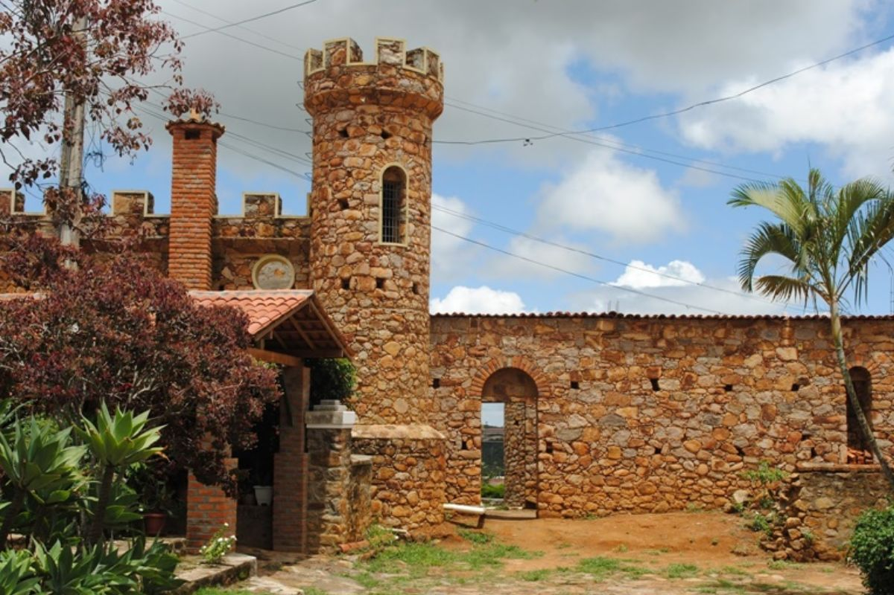

🇧🇷 Português
A Casa Grande das Almas em Triunfo (PE) é um casarão histórico do século XIX, famoso por estar na divisa entre Pernambuco e Paraíba, o que permitia ao cangaceiro Lampião se esconder da polícia alternando entre os estados.
Construída pelo coronel João Timóteo, a propriedade virou museu, mantendo a estrutura original, móveis de época e um sótão onde Lampião jogava cartas, além de ter um castelo inacabado e um cemitério particular.
🇺🇸 English
Casa Grande das Almas in Triunfo (PE) is a historic mansion from the 19th century, famous for being on the border between Pernambuco and Paraíba, which allowed the bandit Lampião to hide from the police by alternating between states.
Built by Colonel João Timóteo, the property became a museum, maintaining the original structure, period furniture, and an attic where Lampião played cards, as well as having an unfinished castle and a private cemetery.